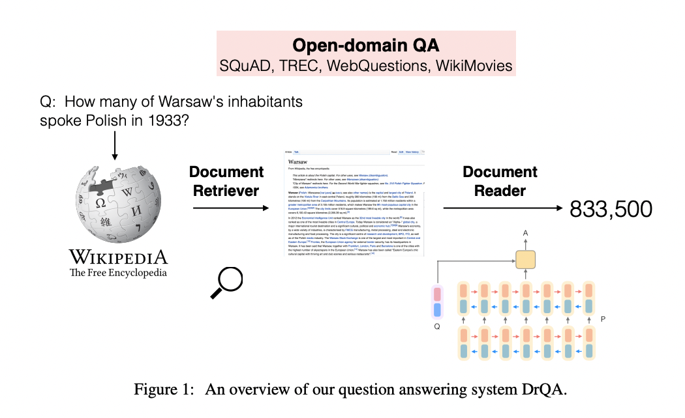

DrQA: Reading Wikipedia to Answer Open-Domain Questions
ODQA의 시작점이 되는 논문을 소개합니다.
Abstract
DrQA는 open-domain QA task에 대해, wikipedia와 같은 외부지식소스를 활용한 사실적인 답변을 하는 방식을 제안한다. 기계판독(machine reading) task는 연관성있는 document retrieval과 text에 대한 machine comprehension을 결합하는 과제이다. DrQA는 bi-gram hashing과 tf-idf matching으로 동작하는 방식과 multi-layer rnn모델의 훈련으로 Wikipedia에서 답변을 탐지해내는 두 검색의 요소를 결합하는 방식을 제안한다. 제안된 방법은 이미 존재하는 QA데이터셋에서 월등한 성능향상을 보였고, multi-task learning과 관련한 supervision 확보에서도 유효함을 증명했다.
Introduction
Wikipedia를 odqa task에서의 데이터셋으로 사용하는 시도는 오래전부터 있어왔지만, 아쉽게도 기계가 아닌 human interested로 구축되어 있다. 그렇지만 Wikipedia는 수백~수천만 개의 document로 구성되어 있기 때문에 large scale opqa와 기계의 text comprehension에 활용되어 왔다.
통상적으로 그 어떠한 질문에라도 답변하려면 두 단계를 거쳐야하는데, 먼저 500만이 넘는 answer 후보 중에 relevant articles를 retrieve해야하고, 그렇게 찾은 후보군 중에서 조심스럽게 답변을 식별해야한다(identify). 이러한 단계구축을 MRS(machine reading at scale) 라고 명명한다. 이러한 단계로 구성하면 internal graph등을 구축할 필요가 없다는 장점이 존재한다. 또한, 이러한 방식은 지식소스에 대한 일반화를 달성하여 어떤 종류의 문서뭉치, 책, 심지어 news와 같은 daily paper에도 적용될 수 있다.
IBM이 제안한 DeepQA같은 large-scale QA 시스템은 Wikipedia가 아닌 매우 많은 answer source를 활용한다. 또한 이런 소스들은 이미 구축된 KnowledgeBase Pair를 사용한다. 결과적으로 이러한 답변은 소스간의 중복성에 영향을 받아 답변이 매우 정확해지고 뾰족해지는 현상을 유발한다. (아마도 검색용도로는 정확하되 진정한 의미의 machine reading이 아니 다 라는 말을 하고 싶었던 것 같음)
때문에 이런 배경을 토대로 machine reading ability에 대한 연구와 SQuAD나 CNN/Daily Mail, CBT와 같은 데이터셋의 생성으로 이어졌다.
그러나, 이러한 machine comprehension 접근들은 연관있는 문서에 대한 short piece text를 미리 구축하고 모델에 조건으로 준다는 것을 가정하고 있고, 이것은 진정한 의미의 open- domain question answering에 부합하지 않는다. 이러한 접근들은 검색솔루션의 일부로 취급되어야 한다. MRS에 촛점을 맞추면 기계이해를 한다는 맥락은 유지하면서도 하위문서에 대한 이해와 현실적인 large open resource를 유지할 수 있다.
논문에서는 여러 종류의 QA 데이터셋에 대해 MRS를 평가할때 제안된 시스템이 강력하게 동작하는 것을 증명할 것이다. Wikipedia를 활용한 Strong QA 시스템(DrQA)는 다음과 같은 요소들로 구성된다.
Document Retriever: bigram hash / TF-IDF matching으로 수백만개의 문서에서 효율적으로 연관문서 subset를 찾아주는 module
Document Reader: 수집된 연관문서를 입력으로 하는 multi-layer rnn네트워크로써, 답변의 범위를 탐지하고 답변하도록 훈련된 module
 이러한 방식으로 훈련된 DrQA의 Document Retriever는 위키피디아의 내장 검색엔진보다 더 강력하고 ,아주 많은 데이터셋(SQuAD 포함)에서 SOTA를 달성하는 성능을 보여준다. 특히 단일 task traning보다 multi-task training에서 더 강력함을 보여준다.